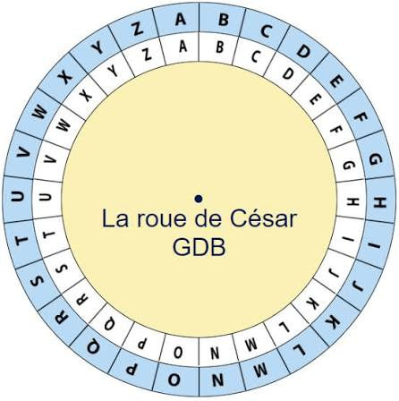

Osint et conférence
Lors de mon stage, nous avons assisté à une intervention animée par Gabriel Madelaine-Toublanc,
qui nous a présenté le métier de pentester. Il nous a expliqué en quoi consiste ce métier,
son rôle dans la cybersécurité et les différentes méthodes utilisées pour tester la sécurité d'un système informatique.
Pour illustrer ses explications, il nous a montré plusieurs techniques de pentest sur une réplique du site Doctolib
qu'il avait lui-même créée à des fins pédagogiques.
Nous avons également participé à une activité d’OSINT (Open Source Intelligence).
L’objectif était de localiser différents endroits à partir de photographies en analysant les indices visibles.
.png)

décryptage et avis
Nous avons également participé à une activité de décryptage, qui m’a permis d’apprendre plusieurs notions importantes liées à la cryptographie. Au cours de cet atelier, nous avons découvert différentes méthodes de chiffrement, , ainsi que la manière de décoder des messages codés à l’aide de techniques efficaces . Cette activité nous a montré comment les informations peuvent être protégées et comment il est possible de les retrouver en comprenant les bonnes méthodes de déchiffrement.
J’ai particulièrement apprécié cette partie du stage consacrée à la cybersécurité, car elle était à la fois ludique et très enrichissante. Elle m’a permis de mieux comprendre les bases de la sécurité informatique tout en participant à des exercices concrets et intéressants.